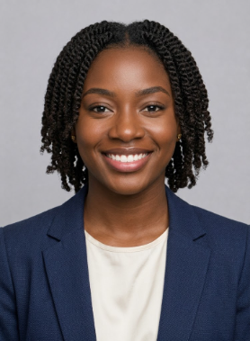

Les Intervenants de AfriConnectSummit

Marie Angel Ndeki
Consultante FinTech et Investissements
Sénégal
Palmarès
- Prix Femme Entrepreneure d'Afrique 2024
- Top 40 Forbes Afrique
Postes occupés
- Directrice Marketing, Orange Sénégal (2018-2021)
- Consultante indépendante (2021-2023)

Krepin Alves Diatta
Data Scientist
Sénégal
Palmarès
- Plus de 50 startups africaines financées
- Fondateur de la Boite KrepeTech
Postes occupés
- Analyste financier, Ecobank (2015-2019)
- Directeur d'investissement, AfricaFund (2019-2023)

Fatou Maryacine Ndiaye
Experte en Intelligence Artificielle
Mali
Palmarès
- Lauréate du Hackathon
- Conférencière à Africa Tech Summit
Postes occupés
- Ingénieure IA, Wave (2020-2023)
- Enseignante vacataire, UCAD (2022-Présent)

Baye Elimane Ndiaye
Date Analyst
Senegal
Palmarès
- Créateur de trois startups technologiques
- Prix African Innovation Awards 2023
Postes occupés
- Chef de projet, Microsoft Afrique (2016-2020)
- CEO, NextGen Technologies (2020-Présent)

Marie Mar Dangoté
Directrice Stratégie et Business Development
Cote d'ivoire
Palmarès
- Top Women in Business Development Africa 2024
Postes occupés
- Consultante Sécurité, Deloitte (2017-2021)
- Responsable Cybersécurité, Bank of Africa (2021-Présent)

Marie Pierre Mbobutu
Experte en UI/UX Designer
Sénégal
Palmarès
- Top Women in Cybersecurity Africa 2024
- Conférencière au Cyber Africa Forum
Postes occupés
- Consultante Sécurité, Deloitte (2017-2021)
- Responsable Cybersécurité, Bank of Africa (2021-Présent)
Kirikou Ali Bongo
Expert en Cybersecurité
Gabon
Palmarès
- Golden Boy in Cybersecurity Africa 2024
- Conférencière au Cyber Africa Forum
Postes occupés
- Consultant Sécurité, BongoTech (2017-2021)
- Responsable Cybersécurité, Bank of Africa (2021-Présent)
Elisabet Lookman
Experte en UI/UX Designer
Nigeria
Palmarès
- Prix Corie d'Or 2025
- Conférencière au Cyber Africa Forum
Postes occupés
- Consultante Sécurité, Deloitte (2017-2021)
- Responsable Designer, Nike (2021-Présent)

Pathé Ciss
Data Scientist
Sénégal
Palmarès
- Champion Africa Data Challenge 2022
- Auteur de plusieurs publications en Data Science
Postes occupés
- Data Analyst, MTN Côte d'Ivoire (2018-2021)
- Lead Data Scientist, SmartData Africa (2021-Présent)